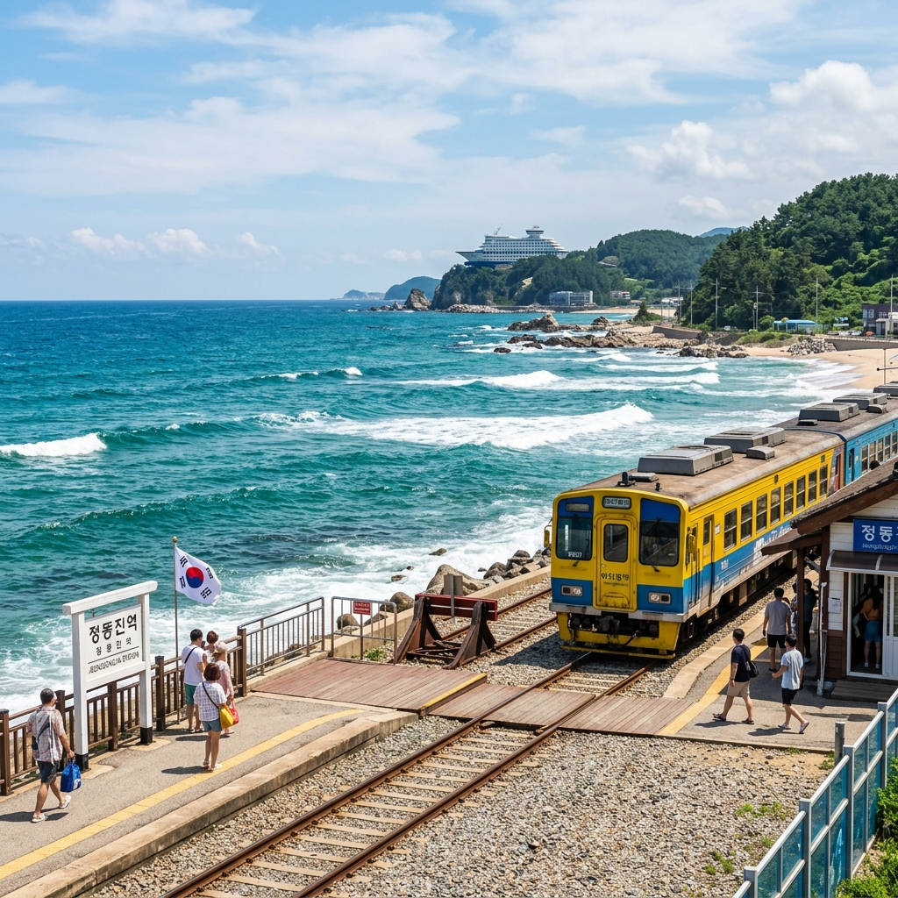
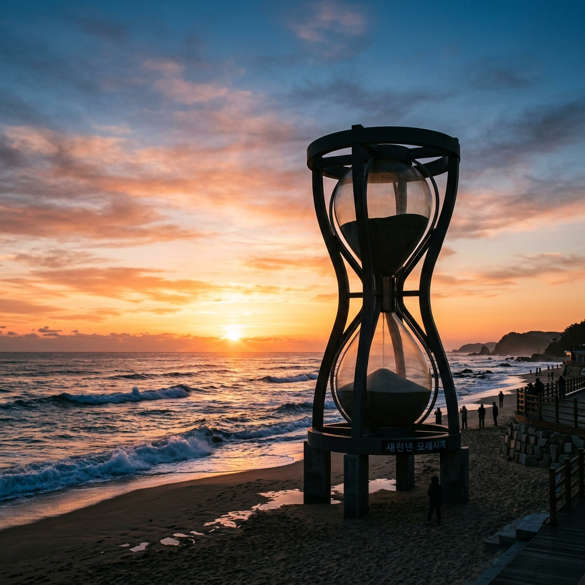
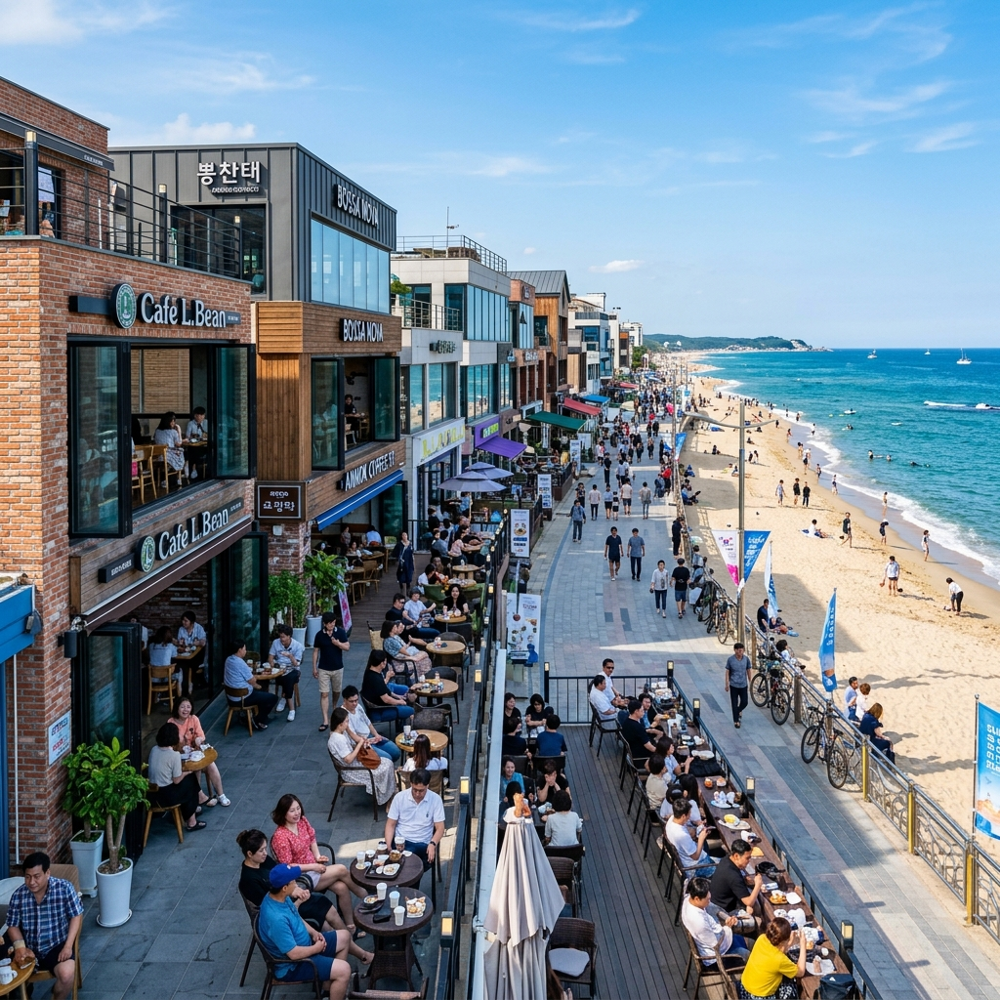

정동진 헌화로 낭떠러지 드라이브와 모래시계공원, 강릉 여름 여행 코스
✍️ 경험박스
정동진 헌화로를 처음 달렸을 때 손에 땀이 났습니다. 절벽 아래 바로 파도가 치고, 도로 한쪽에는 아무 가드레일도 없는 구간이 있어서입니다. 무서운데 아름다워서 계속 달리게 되는 묘한 길이었습니다. 강릉 커피거리에서 마신 커피 한 잔으로 마무리한 그날이 제가 기억하는 가장 완벽한 동해안 여름 여행이었습니다.
01. 헌화로란 어떤 길인가
헌화로는 강원도 강릉시 강동면에서 정동진을 잇는 약 5km의 해안 도로입니다. 도로 한쪽은 절벽, 다른 쪽은 동해 바다가 펼쳐지는 극적인 지형 덕분에 '낭떠러지 드라이브 코스'로 입소문을 탔습니다.
헌화로(獻花路)라는 이름은 신라 향가 '헌화가'에서 유래했습니다. 설화 속 노인이 수로부인에게 벼랑에 핀 꽃을 꺾어 바쳤다는 이야기를 담은 이름입니다. 이 설화의 배경지로 알려진 헌화암(獻花岩) 주변의 경치가 지금도 아름답습니다.
헌화로의 하이라이트는 도로 중간 중간의 포토존과 전망 공간입니다. 차를 세우고 걸어서 파도가 치는 바위 가까이 다가갈 수 있는 구간도 있어 드라이브 중 멈추는 즐거움이 있습니다.

헌화로 절벽 해안도로와 동해 바다 / AI 제작 이미지
02. 헌화로 드라이브 안전 주의사항
헌화로는 경치가 아름답지만 좁고 구불구불한 해안도로입니다. 드라이브할 때 몇 가지 안전 주의사항을 지켜야 합니다.
①
속도 제한 준수: 좁은 2차선 도로이며 갑자기 보행자가 나올 수 있습니다. 규정 속도를 지키고 급커브 구간에서 특히 주의하세요.
②
주정차 주의: 경치에 취해 갓길에 갑자기 정차하는 차들이 많습니다. 뒤따르는 차를 위해 지정된 전망 공간이나 넓은 곳에서만 정차하세요.
③
파도 주의: 너울성 파도가 높을 때 도로 위까지 물이 올라오는 경우가 있습니다. 기상 특보 중에는 헌화로 입구가 통제될 수 있으니 사전에 확인하세요.
03. 정동진역과 모래시계공원
헌화로를 달리면 정동진역에 닿습니다.
정동진역은 세계에서 바다와 가장 가까운 기차역 중 하나로 기네스북에 등재됐습니다. 역 플랫폼 바로 옆에 해변이 이어지는 독특한 경험을 할 수 있습니다.
역 바로 옆에 있는
모래시계공원은 1999년 KBS 드라마 '모래시계'의 인기를 기념해 조성됐습니다. 높이 8m에 달하는 대형 모래시계가 1년에 한 번 새해 첫날 뒤집어지는 행사로도 유명합니다. 모래시계를 중심으로 바다를 바라보는 전망이 훌륭합니다.
모래시계공원 인근에는 조각공원·해안 산책로도 조성돼 있어 바다 산책을 즐기기에 좋습니다.

정동진 모래시계공원에서 바라본 동해 / AI 제작 이미지
04. 정동진 일출 — 주의할 점
정동진은 일출 명소로도 잘 알려져 있습니다. 해맞이 명소로 유명하다 보니 새벽 5시 이전부터 방문객이 몰리는 경우가 있습니다. 여름(7월 기준) 일출 시각은 오전 5시 10~20분대입니다.
단, 구름이 많은 날이나 안개가 낀 날은 일출을 보기 어렵습니다. 날씨 예보 확인은 필수입니다. 일출을 보려면 전날 강릉 또는 정동진에서 1박하는 일정이 현실적입니다.
05. 강릉 커피거리 — 드라이브 마무리
정동진 여행의 마무리는 강릉 커피거리에서 하는 것이 정석입니다. 강릉은 국내 커피 문화의 성지로, 강문해변·안목해변 일대에 개성 있는 카페들이 몰려 있습니다.
특히
안목 커피거리는 오래된 자판기 커피에서 시작해 지금은 스페셜티 카페들이 줄지어 선 명소가 됐습니다. 바다를 바라보며 마시는 커피 한 잔이 정동진 드라이브의 피로를 씻어줍니다.
강릉 교동 쪽 골목에도 숨겨진 카페와 맛집들이 많습니다. 시간 여유가 있다면 강릉 구시가지 골목을 돌아보는 것도 추천합니다.

강릉 안목 커피거리에서 바다를 바라보며 커피 한 잔 / AI 제작 이미지
06. 강릉·정동진 당일 추천 코스
서울 기준 당일치기 코스를 제안합니다.
오전 6시: 서울 출발 → 오전 9시: 강릉 도착, 조식 후 이동 → 오전 9시 30분: 헌화로 드라이브 시작 (심곡항 방향 → 정동진 방향) → 오전 10시 30분: 정동진역·모래시계공원 관람 → 오후 12시: 강릉 시내 점심 → 오후 1시 30분: 경포해변 또는 사천해변 방문 → 오후 3시: 안목 커피거리 카페 투어 → 오후 4시 30분: 귀경 출발
📝 작성자 메모
헌화로는 강릉에서 정동진 방향으로 달리는 것과 정동진에서 강릉 방향으로 달리는 것의 풍경이 전혀 다릅니다. 가능하면 왕복으로 달려보세요. 저는 낮에 한 번, 해질 무렵에 한 번 달렸는데 석양에 물든 바다와 절벽의 조합이 압도적이었습니다. 드라이브 중 갑자기 멈춰야 할 것 같은 뷰들이 계속 등장하니 시간을 넉넉하게 잡는 것이 좋습니다.
#정동진헌화로
#헌화로드라이브
#모래시계공원
#강릉여행
#정동진역
#강릉커피거리
#동해안드라이브
#강원도여름여행
#정동진일출
#해안절벽드라이브